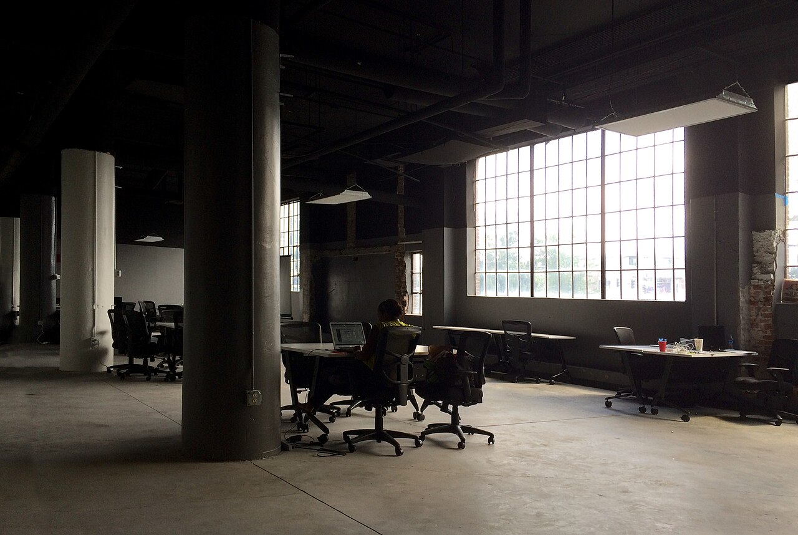

Vol. I · No. 36 · Tuesday, June 23, 2026 · 9 items · ~14 min read
Seoul trips its circuit breakers as the AI trade cracks, the Supreme Court shuts the courthouse door on corporate human-rights suits, and Britain loses a seventh prime minister in a decade.
Corporate · Seoul
Seoul trips its circuit breakers as the AI trade cracks worldwide
Trading screens during a global tech selloff. — Wikimedia Commons
South Korea's KospiInstitutionSouth Korea's benchmark stock index, dominated by Samsung Electronics and SK Hynix, which together make up roughly half its value. fell as much as 10 percent on Tuesday, its steepest drop in more than three months, forcing the Korea Exchange to halt trading for 20 minutes after market-wide circuit breakersConceptAn exchange mechanism that automatically halts trading after a sharp index move, designed to interrupt panic selling and let information catch up to price. tripped. The index closed at 8,203.84, down 910.71 points, or 9.99 percent. Samsung Electronics and SK Hynix, the market's two largest stocks, slid 12.31 and 12.47 percent. Foreign investors were net sellers of about 5.79 trillion won, roughly 3.8 billion dollars, in a single session.
The trigger was a report that SK HynixInstitutionThe South Korean chipmaker that is the leading supplier of high-bandwidth memory to Nvidia, the single tightest link in the AI hardware supply chain. may slow the expansion of its AI memory production and tilt back toward conventional DRAM, read across the market as a warning about the pace of demand in the AI hardware cycle. Kioxia fell more than 15 percent. The selloff followed Monday's slide on Wall Street, where the Nasdaq closed down 1.32 percent at 26,166.60 and the S&P 500 eased 0.37 percent, led lower by chip names. Micron's earnings are the next read on the cycle.
What makes the move serious is where it landed. High-bandwidth memoryConceptStacked DRAM that feeds AI accelerators; supply, not demand, has been its binding constraint, so any hint of slack from the top supplier reprices the whole trade. is the one component where supply, not demand, has set the ceiling. A signal that the leading supplier sees slack ahead is the first credible supply-side crack in the bull case. The open question is whether Tuesday was a one-day foreign-flow flush or the start of a genuine repricing.
Why it mattersThe AI-infrastructure build has carried global equities for two years. A real demand-side doubt at the supply chokepoint is exactly the kind of signal that resets equity multiples, the IPO window, and risk appetite at once, and capital-markets desks will treat it as a regime question, not a single bad session.
Supreme Court shuts the courthouse door on corporate human-rights suits
The Supreme Court ruled 6 to 3 on Tuesday that federal courts may not create new causes of action under the Alien Tort StatuteConceptA 1789 law giving federal courts jurisdiction over civil suits by foreigners for torts "in violation of the law of nations," revived for modern human-rights litigation but steadily narrowed by the Court., so the 1789 law carries no aiding-and-abetting liability. Writing for the majority in Cisco Systems v. Doe I, Justice Barrett held that the Torture Victim Protection ActConceptA 1991 statute creating a civil claim against individuals who commit torture or extrajudicial killing under color of foreign law; the Court held it too bars aiding-and-abetting suits. does not authorize such claims either. Justice Sotomayor dissented, joined by Justices Kagan and Jackson. The plaintiffs, Falun Gong practitioners, had alleged that Cisco helped build China's Golden ShieldConceptChina's mass internet-surveillance system, which the plaintiffs said was used to identify and detain Falun Gong members. surveillance system.
The decision continues the line that runs through Sosa, Kiobel, Jesner and Nestle, each narrowing the statute, and rests the power to create such remedies with Congress alone. For multinationals, it forecloses one of the last broad avenues by which foreign plaintiffs could reach a US corporation in US court for conduct abroad.
Why it mattersThis is a durable, system-level win for corporate defendants. Human-rights exposure for overseas operations is precisely the contingent liability that capital-markets and BigLaw clients price into disclosures and deal risk, and the Court just shrank it.
Starmer resigns, clearing the way for Britain's seventh PM in a decade
Prime Minister Keir Starmer announced his resignation on Monday after an uprising inside his own Labour Party, informing King Charles III but agreeing to stay on as caretaker until a successor is chosen. The trigger was May's local elections, where Labour shed roughly 1,500 council seats and control of more than two dozen councils as Reform UKInstitutionNigel Farage's right-populist party, whose sweeping May 2026 local-election gains in Labour strongholds set off the crisis., led by Nigel FaragePersonThe Brexit campaigner and Reform UK leader, now the central disruptive force in British politics, who has demanded a general election., surged.
Andy BurnhamPersonThe Greater Manchester mayor, nicknamed the "King of the North," who returned to Parliament in a by-election last week and is the runaway favorite to succeed Starmer., the Greater Manchester mayor who won a Commons seat last week, immediately declared he would seek the leadership and is the runaway favorite. Nominations open July 9 and close July 16, with a new leader due by September 1. Under British law Labour need not call a general election until 2029.
Why it mattersA G7 government changing hands mid-term, with a populist insurgency reshaping the field, is a live variable for any institution exposed to UK policy and a reminder of how fast a governing majority can unwind.
Framing noteRight-leaning Fox frames it as Farage and Reform landing a populist blow; left-leaning Al Jazeera and The Washington Post frame a Labour mutiny and the danger of a "far-right" Reform.
Capability, the labs, and AI at the edges of law and markets
Quiet on the lab beat. After a week of marquee model launches and a Google talent exodus, no fresh, independently sourced capability or policy story cleared the bar in the window. The day's AI news is a markets story, and it leads the paper: the demand-cycle doubt now shaking the chip trade out of Seoul.
Markets & Deals
Capital markets, dealmaking, and the cost side of the AI race
Corporate · Mountain View
Alphabet has its worst day in a year as the AI talent war bites
Alphabet's Googleplex headquarters in Mountain View. — Wikimedia Commons
Alphabet fell about 5 percent on Monday, its worst single session in more than a year, closing near 349.68 dollars, as investors absorbed the loss of two marquee researchers: Noam ShazeerPersonA co-author of the original Transformer paper and Gemini co-lead; Google paid about 2.7 billion dollars to bring him back in 2024, and he is now leaving for OpenAI. to OpenAI and John JumperPersonThe DeepMind scientist and 2024 Nobel laureate in chemistry for AlphaFold, now departing for Anthropic., the Nobel laureate behind AlphaFold, to Anthropic.
The drop put a human face on a spending problem. Alphabet recently raised its 2026 capital-expenditureConceptSpending on long-lived assets; Alphabet's surging outlay on AI data centers and chips is the line investors are now scrutinizing. guidance by 5 billion dollars, to a range of 180 to 190 billion, even as free cash flowConceptCash from operations minus capital spending; Alphabet's fell 47 percent year over year to 10.1 billion dollars as AI investment outran cash generation. fell 47 percent year over year to 10.1 billion dollars. Amazon dropped 4.8 percent the same session, with Meta and Microsoft also lower.
Why it mattersThe market is starting to price the cost side of the AI race, not just the promise. Talent flight at the model layer plus rising capex and shrinking cash conversion is the bear case compressed into a single megacap, and it is the read capital-markets desks will carry into the next earnings season.
The Court, the regulators, and the business of the profession
News · Washington · single-tier coverage: C
A jam-packed order list: a new Bivens grant, and LeBron seals his marks
The Supreme Court building at dusk. — Wikimedia Commons
In a crowded order list on Monday, the justices agreed to hear Nielsen v. Watanabe next term, taking up whether the Ninth Circuit wrongly recognized a BivensConceptThe implied damages remedy against federal officers for constitutional violations; the Court has sharply curtailed it, and this grant tees up whether and when it survives. claim against federal officers, a vehicle to narrow that remedy further. The Court denied review in a trademark fight, leaving intact a Federal Circuit decision that cancelled a rival's registration and cleared UninterruptedInstitutionThe media company associated with LeBron James, which filed intent-to-use applications for the "More Than an Athlete" marks in 2018., LeBron James's media company, to register "More Than an Athlete."
The justices also declined an Arkansas appeal, letting stand an Eighth Circuit ruling that private parties have no private right of actionConceptWhether a private party, rather than only the government, may sue to enforce a statute; the recurring chokepoint shrinking Voting Rights Act litigation. to enforce Section 208ConceptThe Voting Rights Act guarantee that voters needing help because of disability, illiteracy, or limited English may choose who assists them. of the Voting Rights Act across seven states. The thread across the grant and the denials is a steady tightening of who may sue, and on what theory.
Why it mattersThe Bivens grant and the enforcement denial both narrow access to federal court, the structural question that increasingly decides civil-rights and accountability cases, while the trademark denial is a clean entertainment-law data point on how far an athlete can fence off his own brand.
Consequential geopolitics, with the cross-spectrum read
News · Switzerland · cross-spectrum LLLCR
US and Iran agree a 60-day road map, then split over the inspectors
The Vienna International Centre, headquarters of the IAEA. — Wikimedia Commons
The first round of high-level US-Iran talks concluded early Monday in Switzerland with a 60-day road map toward a broader deal, a mechanism to keep the Strait of HormuzPlaceThe narrow chokepoint between the Persian Gulf and the Gulf of Oman through which roughly a fifth of the world's oil moves. open, and a channel to defuse regional flareups. Vice President JD Vance said Iran had agreed to invite IAEAInstitutionThe International Atomic Energy Agency, the UN's nuclear watchdog, whose inspectors' return is the central, disputed test of the new road map. inspectors back within the week, calling it a major milestone.
Tehran disputed the centerpiece the same day. Foreign Ministry spokesman Esmail BaghaeiPersonIran's Foreign Ministry spokesman, who said no inspections are scheduled at the bombed sites and that Iran accepted no new commitments. said no IAEA visits are scheduled to the sites the US bombed last year, that Iran had accepted no new commitments, and that the nuclear file was not even discussed during the 18 hours of talks. President Trump separately said there would be no further naval blockade of Iran.
Why it mattersThe gap between Vance's claim and Baghaei's denial is the story. A deal whose verification step the two sides describe differently on day one is fragile, even as oil and shipping markets price the optimistic version.
Framing noteRight-leaning Fox leads with significant progress and inspectors returning; Al Jazeera and center outlets lead with Tehran's contradiction and a possible verification blind spot.
Ukraine hits a Russian missile-electronics plant, and Moscow's approaches again
Overnight into Monday, Ukraine struck the Voronezh Semiconductor Device PlantInstitutionOne of Russia's largest silicon foundries, which Ukraine says makes electronics for Iskander and Kh-101 missiles and the Pantsir-S1 air-defense system. in western Russia with high-precision cruise missiles. The regional governor, Alexander Gusev, confirmed significant damage and said at least five people were killed and dozens wounded, though most workers reached shelters in time.
The same overnight assault hit the DubnaPlaceA town north of Moscow whose space-communications center Ukraine also struck, underscoring a campaign now reaching the capital's approaches. space-communications center in the Moscow region, the latest in a widening long-range campaign that keeps reaching the capital's approaches. The ISWInstitutionThe Institute for the Study of War, whose daily assessments are the standard open-source tracker of the front. reads the strikes as a deliberate effort to degrade Russia's missile-production base and deepen its fuel shortages.
Why it mattersUkraine is moving the war onto Russia's industrial supply chain and within reach of Moscow, a shift in the conflict's geography that complicates any settlement math.
PlayStation pulls up the PC drawbridge on its single-player crown jewels
PlayStation is returning its narrative exclusives to the console. — Wikimedia Commons
PlayStation Studios chief Hermen HulstPersonThe CEO of Sony Interactive's studio business, who oversees PlayStation's first-party development. told staff in a Monday town hall that the company's single-player narrative games will be PlayStation-exclusive going forward, reversing the strategy that since 2020 brought God of War, Horizon, Spider-Man and The Last of Us to PC. Bloomberg's Jason SchreierPersonThe Bloomberg games-industry reporter whose sourced scoops set the trade's agenda. reported the meeting; Hulst's stated rationale is that PC releases were inconsistent and "didn't make enough money," and Sony wants its intellectual property aligned to its own platform.
The shift almost certainly cancels the planned PC port of Ghost of Yotei and rules out PC versions of upcoming first-partyConceptGames developed or published by the platform holder itself, used as console-exclusive draws. titles such as Marvel's Wolverine, while multiplayer games stay multi-platform. A corroborating signal landed the same day: Sony's latest annual report quietly dropped the line, present a year earlier, about deploying first-party titles to "multiple platforms such as PC."
Why it mattersThis is a platform-control bet against the open-PC distribution trend, and it changes how exclusivity, release windowing, and IP value get priced across an entire entertainment supply chain, the structural questions an EASL practice lives on.
"The Big Drift": when AI dissolves work as the spine of a life

The essay opens with the graduate who "did everything right." — Unsplash via Wikimedia Commons
A new essay in The New AtlantisInstitutionA quarterly journal of technology and society, skeptical-humanist in its read of the tech industry., "The Big Drift: An AI Scenario" by Lawrence Lazarus, argues that AI's deepest effect will not be mass unemployment but the slow dissolution of work as the organizing principle of modern life. It opens on a 2027 graduate who "did everything right" and gets no offers, because the junior roles that once trained people, in legal, financial, technical and administrative work, are the first to vanish.
Structured as a five-phase parable, the piece traces how narrowing entry-level intake hollows the middle, strains the wage-tax baseConceptThe payroll-tax foundation that funds much of the state; the essay argues a shrinking workforce erodes it and forces a reckoning over models like a basic income., and finally leaves people adrift without the scaffolding work provided. It cites the universal basic incomeConceptUnconditional cash payments; the essay notes pilots that raised well-being but did not restore the sense of purpose work supplied. pilots that lifted well-being but not employment.
Why it mattersFor a reader building a novel about AI hollowing out the professions, this is close to a thesis statement, and it casts the entry-level legal associate as patient zero of the change.